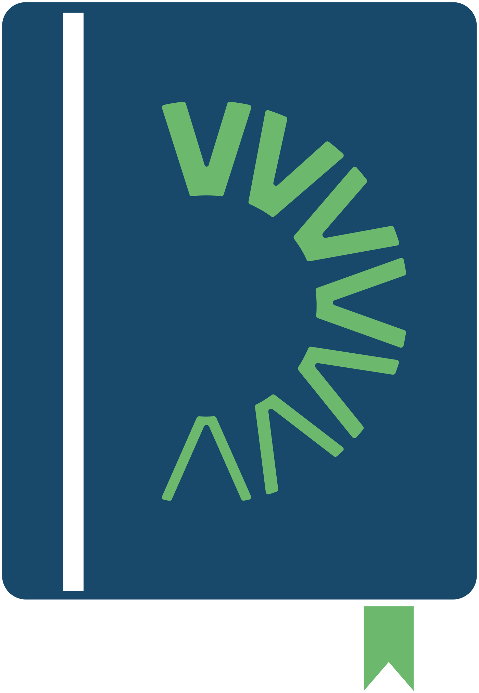

DARe · Interactive Resource
DARe’s Transport Performance & Risk Analysis Framework
For people, for place, for a more sustainable future
What is TPRAF?
01 · Overview
DARe’s Transport Performance & Risk Analysis Framework (TPRAF): a validated, usable framework to help decision-makers — at local, regional, and national levels — assess and balance the demands associated with climate resilience, adaptation, and decarbonisation when addressing risks to transport infrastructure performance and operations.
The TPRAF responds to growing challenges across the UK transport sector, including increasing climate risks, ageing assets, evolving travel demand, and constrained investment, while promoting decisions that consider system-wide performance rather than isolated assets.
The TPRAF is designed as a flexible, modular framework that can be applied by a wide range of transport decision-makers, including:
- National infrastructure owners
- Local and combined authorities
- Transport operators
- Freight companies
- Consultancies
- Researchers
Rather than replacing existing organisational processes, it is intended to complement and strengthen current practices, providing a unifying framework that helps integrate assessments and decision-making processes, enabling smoother data exchange and reducing fragmentation. This consistency supports more joined-up planning, improved information sharing, and better alignment between strategic, operational, and investment decisions.
About the TPRAF Diagram
02 · The resource
This interactive version of the DARe Transport Performance & Risk Analysis Framework (TPRAF) is one of several resources developed by the DARe Hub. Alongside the full TPRAF report and the DARe Handbook, it is designed to support the transport sector in understanding and applying the framework. The full report explains the purpose, structure, and development of TPRAF, while the DARe Handbook provides detailed guidance on how to operationalise its components in practice.
-
Full TPRAF report
The purpose, structure, and development of the framework.
-

DARe Handbook
Guidance on operationalising the framework’s components in practice.
-
This interactive diagram
Explore the framework at your own pace.
This interactive resource offers an accessible introduction to the framework, enabling users to explore its structure, components, and relationships at their own pace. Whether you are encountering TPRAF for the first time or considering how it might support your organisation, this resource is intended to help you navigate the framework before engaging with the more detailed DARe guidance and tools.
The simple form
03 · Level 1
Further Information
04 · More detail
Further information and supporting downloads will be added here.
Awaiting final content from DARe
Explore the framework
A guided, interactive walkthrough. Start with the simple form above, then move through the extended diagram and the Level 2 component maps.